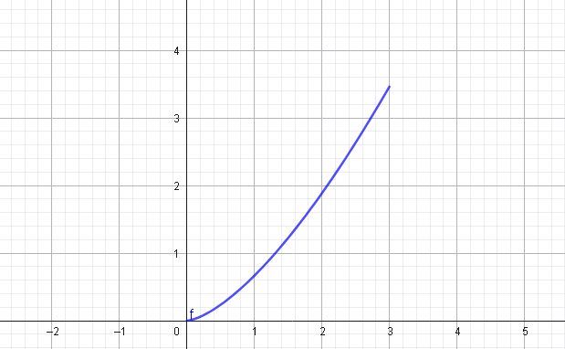

5. Longitud de una Curva (Longitud de Arco)
Si pudieras tomar una curva en el plano cartesiano, estirarla hasta que quede completamente recta y medirla con una regla, estarías calculando la longitud de arco. Se basa en el Teorema de Pitágoras aplicado a infinitos segmentos minúsculos.
$$ L = \int_{a}^{b} \sqrt{1 + [f'(x)]^2} dx $$
Ejercicio Práctico
Calcular la longitud de la curva: \( y = \frac{2}{3}x^{3/2} \) en el intervalo \( [0, 3] \).

- Calcular la derivada de la función \(f'(x)\): $$ y' = \frac{2}{3} \cdot \frac{3}{2} x^{1/2} = \sqrt{x} $$
- Elevar la derivada al cuadrado: $$ (y')^2 = (\sqrt{x})^2 = x $$
- Sustituir en la fórmula de la integral: $$ L = \int_{0}^{3} \sqrt{1 + x} dx $$
- Integrar (usando sustitución simple \(u = 1+x\)): $$ L = \left[ \frac{2}{3}(1+x)^{3/2} \right]_{0}^{3} $$
- Evaluar los límites: $$ L = \frac{2}{3} (4^{3/2} - 1^{3/2}) = \frac{2}{3}(8 - 1) = \frac{14}{3} \text{ u} $$
📏 Unidades Simples
Como estamos calculando una distancia lineal (no es área ni volumen), la respuesta siempre debe estar en unidades lineales (\( \text{u} \)).
Video Recomendado
Introducción y cálculo paso a paso

Apoyo en YouTube